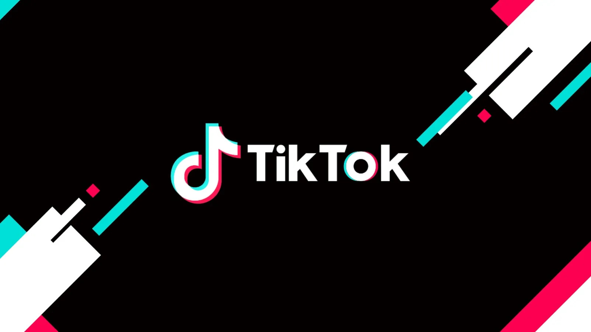

Aprenda a criar uma página de sucesso no TikTok

Por que usar o TikTok para promover o seu negócio?
O TikTok rapidamente se tornou uma das plataformas de mídia social mais populares do mundo, mas vale a pena usar para o seu negócio? Desde o seu lançamento em 2016, o TikTok agora tem mais de 1 bilhão de usuários, e a marca estima que o mesmo 1 bilhão esteja ativo por mês. A exposição é verdadeiramente de próximo nível. E embora esses números possam parecer intimidantes ou como se fosse tarde demais para entrar - esse certamente não é o caso, e você certamente não está sozinho. Na verdade, muitos empresários estão começando a ver que podem estar perdendo essa grande oportunidade de marketing porque o TikTok é muito diferente de outras plataformas de mídia social. E em 2021, é novo o suficiente para entrar cedo e criar conteúdo para sua marca, mas também grande o suficiente para que você tenha um público imediato. A hora é agora, e o lugar para aprender o porquê é aqui. A Página For You é para o seu negócio? Vamos entrar nisso.
Veja por que você deve usar o TikTok para seus negócios em 2022.
"Já tenho redes sociais suficientes"
Você pode estar pensando: "Meu negócio já tem redes sociais suficientes, não preciso adicionar outra conta à minha lista". E embora essa seja uma reação inicial completamente válida, argumentamos que ainda é um investimento que vale a pena fazer para sua marca a longo prazo. Mesmo que você não crie muito conteúdo desde o início, recomendamos que você crie pelo menos uma conta no TikTok para reservar o nome de usuário da sua empresa na plataforma, caso em algum momento você decida começar a criar conteúdo.
Maximize a criatividade
O melhor do TikTok é que não é apenas uma plataforma de mídia social onde você pode compartilhar conteúdo com seus seguidores, mas na verdade permite que os usuários criem seu próprio conteúdo com o aplicativo - o que é mais um investimento para sua marca. Quando você cria um vídeo como uma marca que desencadeia conversas, educa ou desencadeia emoções para os usuários, é provável que você seja agradavelmente surpreendido e recompensado pelo conteúdo e engajamento gerados pelo usuário. Os usuários do TikTok podem usar sons comuns com outro usuário, fazer dueto, costurar ou até reagir a vídeos por meio do recurso de tela verde. Isso abre sua exposição a um público mais amplo do que você jamais poderia imaginar, e o algoritmo exclusivo e preciso do TikTok torna provável que as postagens de sua empresa acabem na página Para você do seu cliente ideal.
Exposição
Muitas empresas obtiveram sucesso no TikTok não apenas pela criatividade e autenticidade que oferece, mas também pelo incrível algoritmo e exposição que oferece. O TikTok dará à sua empresa acesso a um público que outras plataformas não têm e, investindo tempo na construção de seu público e seguindo agora, sem dúvida valerá a pena com esforço consistente e conteúdo valioso. Para os proprietários de empresas, uma das coisas mais importantes que você pode ter é a exposição - quanto mais exposição você tiver, mais chances terá de reter clientes, obter novos e criar reconhecimento geral da marca. O TikTok é uma das melhores maneiras de fazer isso em 2022 porque, ao usar uma abordagem focada em vídeo para o conteúdo de mídia social da sua marca, você pode contar sua história da maneira mais relacionável e possível.
Por que agora?
Se não agora, quando? Essa é a pergunta a se fazer ao considerar o TikTok para negócios. A primeira coisa a notar é que o TikTok não vai desaparecer tão cedo. De fato, a plataforma é tão bem-sucedida que outras plataformas de mídia social se sentem ameaçadas pela concorrência e estão mudando seu foco para vídeos para acompanhar o TikTok. Recentemente, o chefe do Instagram, Adam Mosseri, anunciou que seu aplicativo estaria adotando uma abordagem mais focada em vídeo para sua plataforma avançar. Desde o anúncio dos rolos do Instagram em agosto de 2020, houve uma sugestão de competição com o TikTok - mas no recente vídeo do Twitter de Mosseri, ele confirma isso dizendo: "Há uma competição realmente séria agora - o TikTok é enorme". O fato de o líder de uma das plataformas de mídia social mais usadas do mundo admitir que precisa acompanhar o TikTok deve vendê-lo por si só.
"Não é apenas para a Geração Z?"
Outra razão para entrar no jogo agora é que vimos repetidamente ao longo do tempo que um excelente indicador de 'a próxima grande coisa' com plataformas de mídia social e tendências de marketing como um todo é onde a geração mais jovem dedica seu tempo e atenção. Embora inicialmente seja fácil descartar o TikTok para negócios com pensamentos como: "O TikTok é apenas para a geração Z, meu público-alvo não está lá", você ficaria surpreso. Se olharmos para trás em outras plataformas de mídia social que são importantes para a estratégia de marketing em 2021, como Instagram, Facebook e Twitter - todas elas também começaram como plataformas muito "jovens", com pouco valor para as empresas. Obviamente, essas plataformas sociais agora estão repletas de várias gerações e atendem a milhões de empresas como ferramenta de marketing. O mesmo deve ser esperado com o TikTok, pois já está acontecendo e aumentando a cada segundo. De qualquer forma, um pensamento mais preciso sobre o TikTok para o seu negócio pode ser: "Meu público-alvo não está lá - ainda". Como vimos repetidas vezes, as empresas e os perfis pessoais que chegam cedo e publicam conteúdo consistentemente valioso são extremamente propensos a serem recompensados a curto e longo prazo.
Diferente do resto
O TikTok também oferece uma experiência de usuário única em sua plataforma, em oposição a outros aplicativos de mídia social. Isso inclui a capacidade de criar vídeos curtos gravando, ajustando clipes, personalizando áudio, aplicando efeitos e aprimorando com filtros, tudo no aplicativo. A oportunidade de criatividade é realmente maximizada em um único aplicativo e não está nem perto do fim do crescimento de sua interface. Quando você usa o TikTok para negócios, sua estratégia de marketing digital basicamente se multiplica indefinidamente. O aplicativo também é conhecido por ouvir bem o feedback de seus usuários. Quando os usuários ativos gostam de certos recursos ou tendências, o TikTok realmente cria novos recursos ou efeitos de edição para permitir que os usuários criem conteúdo semelhante com mais facilidade. O mesmo vale para o outro lado, onde se uma nova atualização ou recurso lançado recebe apenas feedback negativo, a plataforma é rápida em ajustá-lo ao gosto dos usuários. Ao fazer isso, o TikTok já está muito à frente de outras plataformas de mídia social que são notórias por 'mudar demais' ou não ouvir o que seus usuários gostam e não gostam.
Trends
O TikTok começou como apenas uma plataforma de mídia social de música e vídeo, mas desde então evoluiu para um aplicativo que mostra milhões de tendências que permitem criatividade infinita. O TikTok implementou um algoritmo eficaz para mostrar aos usuários vídeos de tendências relevantes para seus interesses, facilitando a criação de conteúdo relevante e de marca para o seu setor sem precisar fazer muita pesquisa. A melhor parte das tendências do TikTok é que sempre há uma nova. Isso facilita a criação de conteúdo para as equipes de marketing, pois há tendências divertidas e intermináveis para criar e aplicar em seu setor. A página Para você é a 'página de exploração' do aplicativo, que mostra um feed infinito de vídeos de tendências para os usuários do TikTok aproveitarem e se envolverem. Torna-se evidente que um certo estilo de vídeo é 'tendência' quando há vários vídeos usando o mesmo som e estrutura. Você pode pensar nas últimas tendências do TikTok como um meme de ação ao vivo. Aplicável em vários cenários e setores, de fácil compreensão e infinitas maneiras de criar conteúdo com ele.
Dicas para começar
Então, você está pronto para iniciar sua estratégia de negócios do TikTok. Incrível! Para fazer isso, é fundamental entender alguns princípios para começar. Aqui estão 3 dicas essenciais para levar com você ao entrar no #ForYouniverse.
1. Determine seus objetivos
A primeira dica para começar a usar o TikTok para empresas é entender o que você deseja que sua marca tire da plataforma. Você não precisa ter a resposta mais específica para isso imediatamente, e sua resposta provavelmente mudará com o tempo - no entanto, é bom ter uma ideia de qual direção inicial você deseja seguir. Aqui estão algumas ideias para ' metas' que ajudarão a estabelecer as bases para sua conta comercial do TikTok comercial:
- Aumentar o reconhecimento da marca
- Educar o público-alvo
- Alvo Futuros Funcionários
- Alvo futuros clientes ou clientes
- Aumentar as vendas
- Fique na marca
- Aumente os cliques no site
- Aumente o alcance do seu público
2. Compartilhe informações valiosas
Agora que você tem seus objetivos, é importante criar conteúdo valioso que atenda ao propósito desses objetivos. Pense em seu objetivo geral como uma planta que você está cultivando, e cada TikTok que você enviar está regar esse objetivo. Quanto mais valioso o conteúdo, maior a bebida de água que cresce sua planta-alvo geral. Seguir isso? Bom. Em outras palavras, é muito importante considerar seu público ao criar conteúdo e fornecer o que você sabe que eles estão buscando por meio de seus vídeos. Se o seu conteúdo não for valioso para o seu público-alvo, ele provavelmente falhará no algoritmo ou acabará na página Para você de alguém que provavelmente não se interessará pelo seu negócio. Conteúdo com pouco ou nenhum valor não é recompensado e deve ser evitado a todo custo.
3. Seja consistente
A consistência é fundamental. Mantenha as postagens chegando postando regularmente, se possível. Quando você começa, pode sentir que seu conteúdo não está recebendo a devida atenção, o que pode ser desanimador e fazer você querer desistir. Nosso conselho: Fique com ele. Preste atenção ao seu conteúdo que tem um desempenho (mesmo que um pouco) melhor que os outros e evolua sua estratégia de marketing do TikTok de acordo. É um ciclo de aprendizado sem fim, mas com esforço consistente e tentativa e erro, você certamente será recompensado. Nós acreditamos em você!
Avante e adiante
Se você está se perguntando como incorporar o TikTok em sua estratégia de marketing digital ou pensando se vale a pena fazê-lo - esperamos que esta postagem do blog tenha ajudado você a tomar sua decisão. Se você tiver dúvidas, quiser saber mais ou estiver interessado em serviços profissionais de marketing digital, temos o que você precisa. Diga olá hoje! Mal podemos esperar para conhecê-lo.
Por que nos contratar/usar nossos produtos e serviços?
Nós lhe ensinamos como crescer e manter uma página de sucesso no TikTok, assim como técnicas para fazer os seus vídeos virais, ganhar mais seguidores, aumentar o engajamento e fazer dinheiro com o aplicativo.
Nós oferecemos diversos produtos e serviços, como consultoria, cursos, livros e tutoriais.
Ficou interessado?
Então preencha os campos abaixo para receber mais informações sobre nossos produtos e serviços.